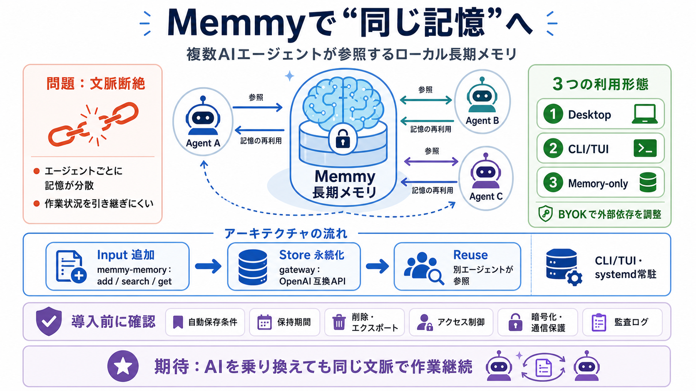

GitHub - MemTensor/memmy-agent: A personal AI agent & local memory ...
Account mode free credits: signing in grants Agent task trial tokens, so you can get running without your own API Key. T…

複数AIエージェントが、同じ“個人の記憶（長期メモリ）”と“永続的な文脈”を参照できるようにする、ローカル寄りのメモリサービス＋ゲートウェイ＋CLI/TUI。
エージェントを切り替えるたびに、作業状況や背景知識が継続しにくくなります。長期的な流れを保つには、会話履歴ではなく“参照可能な記憶”が必要です。
エージェントは“作業する手”で、Memmyは“覚えておく場所”です。保存された知識は、次のエージェント利用時にも参照される前提で設計されています。
Memmyは主に「メモリサービス（memmy-memory）」「ゲートウェイ」「CLI/TUI」で構成され、systemdユーザーサービスとしてローカルに常駐運用できます。
CLI/TUIは初回起動時にモデル設定ウィザードを開き、systemdユーザーサービスはTUI/ターミナル終了後も継続稼働する想定です。設定変更は環境変数が反映されるよう再起動されます。
Memmyは、(a) デスクトップアプリ、(b) LinuxのCLI/TUI（systemd運用）、(c) メモリサービス単体CLI（memmy-memory）という3形態で提供されます。
README抜粋では、Memory SkillとHook/pluginはインストール段階と有効化段階が分離される可能性があります。明示的に memmy-memory init --agent <agent> のような運用が示されています。
長期メモリはブラックボックス化しがちですが、CLIで検索・追加・取得できる構造が示されています。人手で“何が入っているか”を確かめられます。
memmy-memory search）add / get）BYOKモード（ユーザー自身のモデルAPI利用）への切り替えが可能です。最小構成として ~/.memmy/config.yaml の例が提供されています。
~/.memmy/config.yaml に provider 設定（例：OpenAIキー参照）抜粋から言えることは強い一方、長期記憶は個人情報に直結するため、保存ポリシーやセキュリティ実装は追加確認が必要です。
意見として、Memmyは「同じ記憶」を理念で終わらせず、ローカル常駐・OpenAI互換API・systemd・CLI/TUIで運用導線を用意している点が強みです。一方で、保存粒度・保持期間・削除・監査・誤保存対策などの情報不足がリスクになります。
Memmyはエージェント横断のタスク継続に向く可能性が高い一方、長期記憶は個人情報リスクも増えます。導入前に、保存ポリシー・削除/エクスポート・アクセス制御・暗号化/通信保護・監査ログを確認するのが安全です。
Account mode free credits: signing in grants Agent task trial tokens, so you can get running without your own API Key. T…
The Desktop app provides the task workbench, desktop pet, memory panel, tool connections, and settings pages. The Agent…
Account mode free credits: signing in grants Agent task trial tokens, so you can get running without your own API Key. T…
Claude Code no get memory plugin interface, so Memmy no hook into am. The integration simple pass that. Claude Code dey …
The fastest-growing surface area in AI agent memory is not the core pipeline. It is the integration layer. As of early 2…